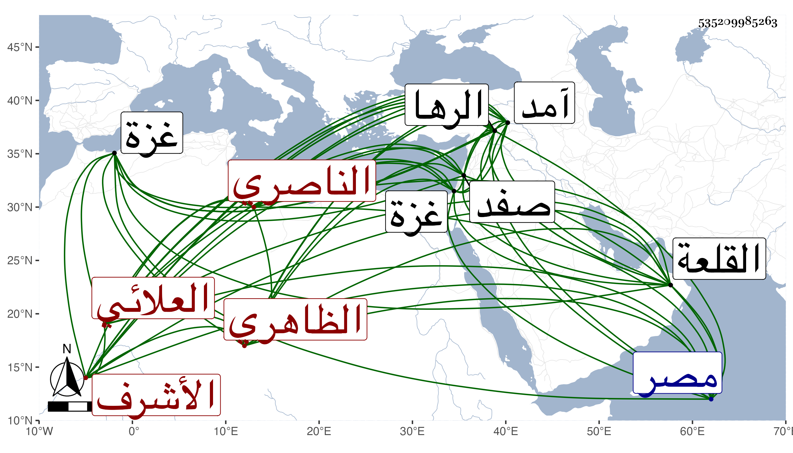

0902Sakhawi.DawLamic.ITO20230111-ara1.EIS1600.535209985263
Biography ID: 535209985263
1080
اينال العلائي الظاهري ثم الناصري الأشرف سيف الدين أبو النصر ويقال له الأجرود وهو والد أحمد الماضي اشتراه الظاهر برقوق هو وأخوه طوخ وهو أكبرهما من جالبهما علاء الدين فأعتق طوخا وانتقل هذا بعده لولده الناصر فرح فأعتقه وصار خاصكيا إلى أن تأمر عشرة في أيام المظفر وصار من رؤوس النوب ثم من الطبلخاناة ثم رأس نوبة ثاني ثم ولاه الأشرف ينابه غزة في سنة إحدى وثلاثين وسافر معه إلى آمد ثم لما ولي الرها ولاه نيابتها مع تمنع زائد وأمده فيها بالسلاح والمال والعليق وغير ذلك لخرابها حينئذ وجعل عنده مائتي مملوك لحفظها ثم أنعم عليه بتقدمة بمصر زيادة على ما بيده ثم عزله عن الرها بعد نحو ثلاث سنين وأقام مقدما مدة ثم نقله لنيابة صفد إلى أن استقدمه الظاهر وقدمه ثم عمله دواداره بعد تغري بردي المؤذي في سنة ست وأربعين ، وسافر لغزو الفرنج مقدما غير مرة بل كان من جملة الأمراء في غزوة قبرس الكبرى ثم عمله أتابكا بعد يشبك السودوني إلى أن استقر في المملكة بعد خلع ولده المنصور في ربيع الأول سنة سبع وخمسين وظهر بولايته مصداق ما حكاه أبو الفضل المغربي أنه كان عند الشرف يحيى بن العطار وهو في غمرات الموت فسمعه يقول اينال الأجرود بقي لرياسته خمس درج وذلك نظرا إلى جبر الكسر في سنة وفاة القاتل فإنها كانت في ذي القعدة سنة ثلاث وخمسين وولاية صاحب الترجمة وكون المراد بالدرج السنة . وجرت في أيامه حوادث بينت الكثير منها في التبر المسبوك ، واستمر سلطانا إلى أن استقر ولده الشهابي أحمد بعد خلعه نفسه وموته بعد ذلك بيوم بين الظهر والعصر منتصف جمادى الأولى سنة خمس وستين وقد قارب الثمانين بعد مرضه نحو نصف شهر وصلى عليه بباب القلة من القلعة ثم دفن بالقبة من مدرسته التي أنشأها بالصحراء فكانت مدة مملكته ثمان سنين وشهرين وستة أيام وكان عاقلا سيوسا بذي اللسان كثير الاحتمال صبورا بعيدا عن إثارة الفتن والشرور شجاعا مقداما عارفا بالحروب والوقائع بأنواع الملاعب من الفروسية متحريا في سفك الدماء والحبس يحسب كثيرا من العواقب الدنيوية حتى أنه قال لمن لامه على إبقاء شخص كان يعلم منه ذمة عقل الأمر غير عقل السلطنة وقال عن البقاعي ما أسلفته فيه مع لين ربما يؤدي إلى خراب الإقليم وقلة المروءة بل أدى إلى تجرئ مماليكه عليه بالرجم وغيره وعلى سائر الرعايا بجميع أنواع الفسق والكبائر بحيث غطى ذلك جميع ما لعله يذكر في حسناته خصوصا وميله إليهم أكثر واعتذاره عنهم أشهر هذا مع مزيد شحه ومحبته للمال من أي وجه كان ولذا تزايدت الرشوة في أيامه وبذلك الأموال فيما لم تجر العادة بالبذل فيه وانقاد في أموره كلها لزوجته فتزايد البلاء وعم الضرر سيما للفقهاء وأهل العلم بالنسبة للجوالي والوظائف مما في شرحه طول غير راغب في بر ولا قربة بل هو عديم الصدقة عري عن الانقياد إلى الخير تام البلادة وما أظن السبب في قصر مدته وإلا فهو نقيضه بكل وجه وأنشأ المدرسة التي دفن فيها والتربة المقابلة لها وهما في غاية الحسن ووسع الشارع الذي بين القصرين عند بناية الحمامين والربع والقيسارية وغير ذلك وبالجملة ففيه محاسن معدودة روى له بعد موته منام نسأل الله العفو .
